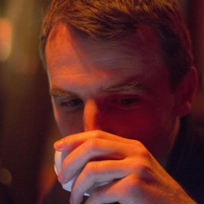

Rob Ramsay
A Wellington based Ruby on Rails developer at web-consultancy
Rabid
. Ex Electronic-Engineer, dance music nerd, and creative co-conspirator. Rob worked at
Canterbury University's HIT Lab
in a former life.